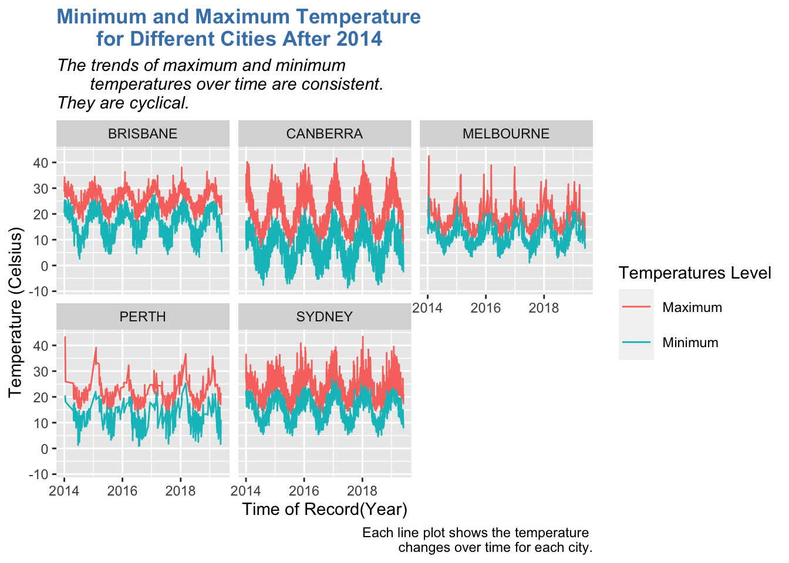
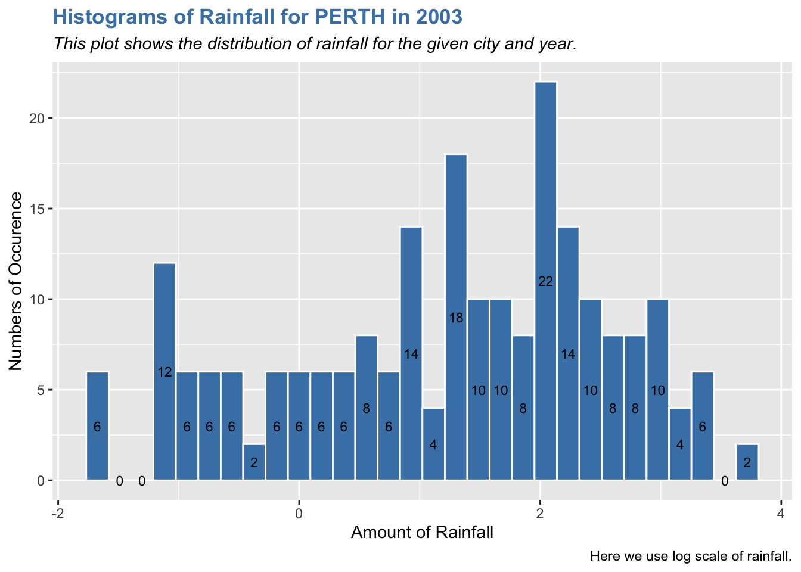
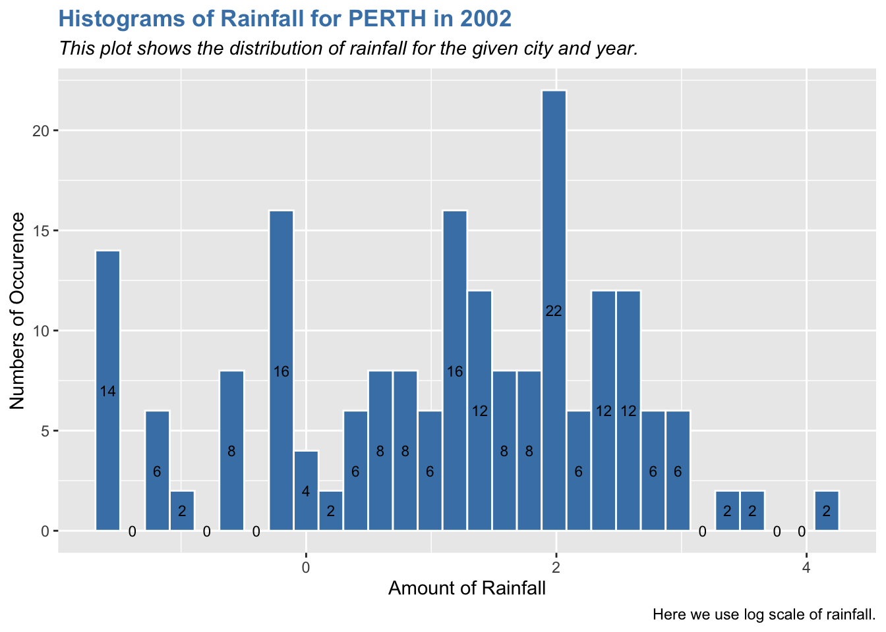
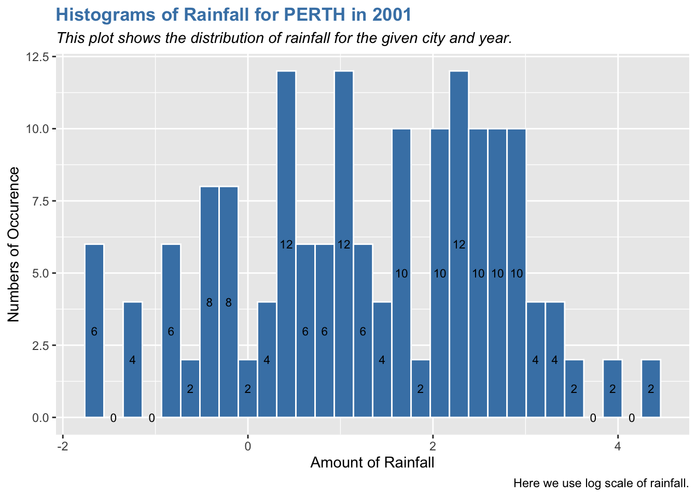
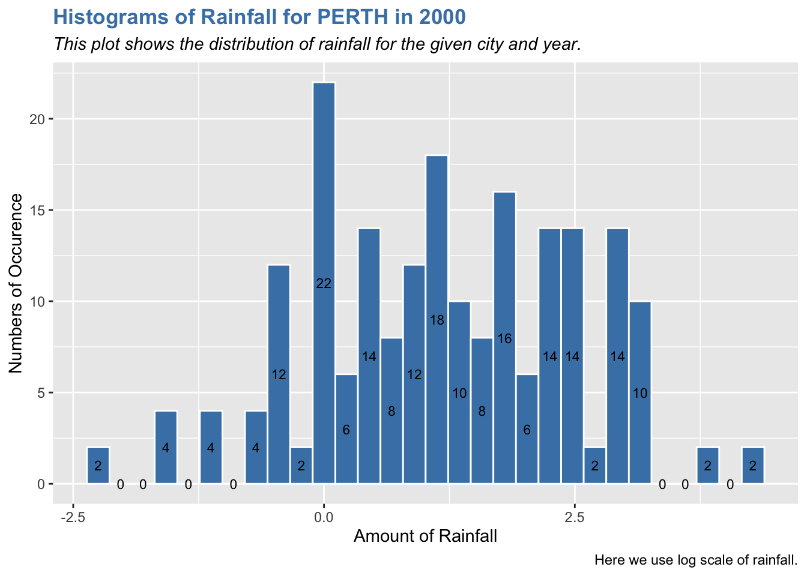
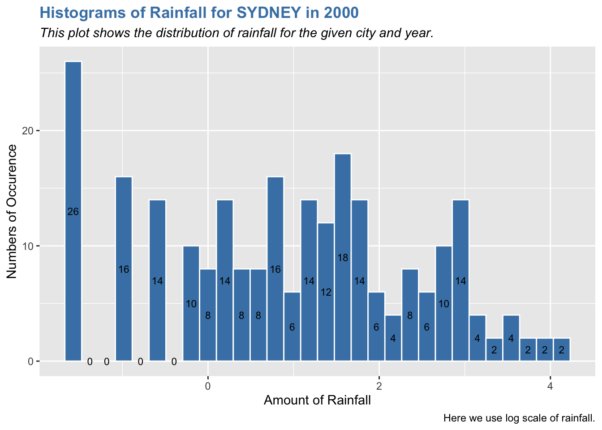
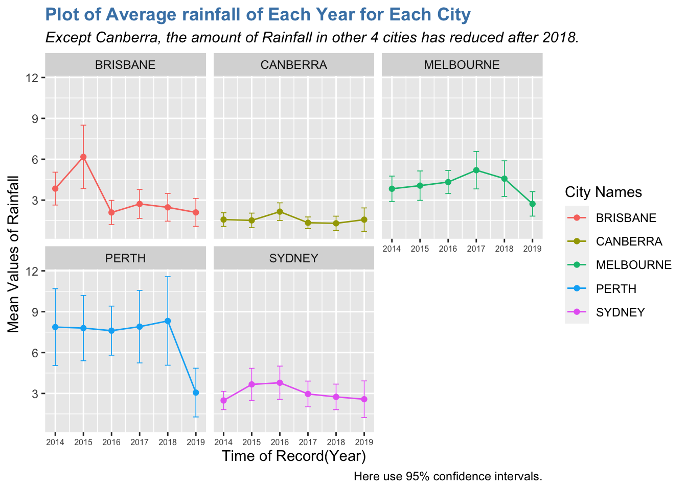

library(here)
library(tidyverse)
library(lubridate)Example Analysis
Data & Analysis Goal
This data is about the amount of rainfall and the changes of temperatures over times in Australia. I want to see the changes of rainfall and corresponding to different years in Australia.
And this data analysis will help meteorologists, botanists better understand the climate of Australia.
The two datasets I used here comes from TidyTuesday. Here is the link of the data set: https://github.com/rfordatascience/tidytuesday/tree/master/data/2020/2020-01-07
Data Visualization
#Download the data sets
if(!file.exists(here("data","tuesdata_rainfall.RDS"))){
tuesdata <- tidytuesdayR::tt_load('2020-01-07')
rainfall <- tuesdata$rainfall
temperature <- tuesdata$temperature
# save the files to RDS objects
saveRDS(tuesdata$rainfall, file = here("data","tuesdata_rainfall.RDS"))
saveRDS(tuesdata$temperature, file = here("data","tuesdata_temperature.RDS"))
}rainfall <- readRDS(here("data","tuesdata_rainfall.RDS"))
temperature <- readRDS(here("data","tuesdata_temperature.RDS"))#Drop the rows with NAs
rainfall_f = rainfall %>% drop_na()#Create the new data set with date and year variables
rainfall_d = rainfall_f %>% unite(col="date", year:day, sep="-")
rainfall_d$date = ymd(rainfall_d$date)
rainfall_d = rainfall_d %>% mutate(year = rainfall_f$year)
rainfall_d$city_name = toupper(rainfall_d$city_name)#join rainfall and temperature
df = rainfall_d %>% inner_join(temperature, by = c("city_name", "date"))Plotting temperature data over time
library(ggplot2)
df %>% filter(year >= 2014) %>%
ggplot(aes(x = date, y = temperature, color = temp_type)) +
geom_line() + facet_wrap(vars(city_name)) +
labs(x = "Time of Record(Year)", y = "Temperature (Celsius)",
title = "Minimum and Maximum Temperature for Different Cities After 2014",
subtitle = "The trends of maximum and minimum temperatures over time are consistent.\nThey are cyclical.",
caption = "Each line plot shows the temperature changes over time for each city.") +
theme(plot.title = element_text(color="steelblue", face="bold"),
plot.subtitle = element_text(face="italic"),
legend.key.size = unit(0.8, 'cm')) +
scale_color_discrete(name = "Temperatures Level",
labels=c("Maximum", "Minimum"))
Ideals about the function
Since we know that there are two arguments (city_name and year) we need to put. Other than that, it is the same.
I find out all the cities that occur in our data set. And the check if the city name we enter is one of the cities recorded in our data set. If not. then report the error.
For each valid city name, I check if the year we entered have rainfall been recorded. If not, then report the error.
If we get yes for both check, then we can draw the histogram of rainfall for the given year and city.
Plotting rainfall data over time
#Create the function to plot the amount of rainfall in a specific year for one city in Austalia
rainfall_plot = function(name, time){
cityname_list = df$city_name %>% unique()
if (name %in% cityname_list){
if ((df %>% filter(city_name == name, year == time)%>%
count()) > 0){
df %>%
filter(city_name == name, year == time) %>%
ggplot(aes(log(rainfall))) +
geom_histogram(color = "white", fill = "steelblue") +
stat_bin(geom='text', aes(label = ..count..),
position=position_stack(vjust = 0.5), size = 3)+
labs(x = "Amount of Rainfall", y = "Numbers of Occurence",
title = paste("Histograms of Rainfall for", name, "in", time),
subtitle = "This plot shows the distribution of rainfall for the given city and year.",
caption = "Here we use log scale of rainfall.") +
theme(plot.title = element_text(color="steelblue", face="bold"),
plot.subtitle = element_text(face="italic"))
}
else{
error_year = "There is no rainfull recorded under the year you want to look into! \nPlease change the year you entered."
stop(error_year)
}
}
else{
error_name = "There is no rainfull recorded for the city you entered! \nPlease change the city name."
stop(error_name)
}
}
Note
Since I create a function to draw the histogram for different cities in different years, so we can replace the city name and the time as we want.
As we can see the distributions of the amount of rainfalls in different cities in Australia are very different. With the same cities, the distribution of the amount of rainfall is similar.
rainfall_plot("PERTH", 2003)
rainfall_plot("PERTH", 2002)
rainfall_plot("PERTH", 2001)
rainfall_plot("PERTH", 2000)
rainfall_plot("SYDNEY", 2000)
rainfall_plot("MELBOURNE", 2000)
calculate_CI <- function(x, conf) {
alpha <- 1 - conf
degrees_freedom = length(x) - 1
t_score = qt(p=alpha/2, df=degrees_freedom, lower.tail=FALSE)
CI = mean(x)+c(-1,1)*t_score*(sd(x)/sqrt(length(x)))
return(CI)
}Plotting the average rainfall of each Year for each City with 95% Condidence Interval
rain_df = df %>% filter(year >= 2014) %>%
select(city_name, date, rainfall, year, station_name) %>%
unique() %>% group_by(city_name,year) %>%
summarise(sample_mean = mean(rainfall), sample_deviation = sd(rainfall),
lower_bound = calculate_CI(rainfall, 0.95)[1],
upper_bound = calculate_CI(rainfall, 0.95)[2])rain_df %>% ggplot(aes(y = sample_mean, x = year, color = city_name)) +
geom_point() + geom_line() + facet_wrap(vars(city_name))+
geom_errorbar(aes(x = year, ymin = lower_bound, ymax = upper_bound),width=0.2,size=0.3)+
labs(x = "Time of Record(Year)", y = "Mean Values of Rainfall",
title = "Plot of Average rainfall of Each Year for Each City",
subtitle = "Except Canberra, the amount of Rainfall in other 4 cities has reduced after 2018.",
caption = "Here use 95% confidence intervals.") +
theme(plot.title = element_text(color="steelblue", face="bold"),
plot.subtitle = element_text(face="italic"),
axis.text.x=element_text(size=6)) +
scale_color_discrete(name = "City Names")
Analysis
From the temperature plot, we can see that the changes of the maximum and minimum temperatures each city are synchronized with the same trend in each year. And the changes is cyclical and the temperatures are almost the same in the same month each year.
For the changes of the amount of rainfall is not with certain trends. But from the last plots, we can see that the amount of rainfall is kind of reducing, and some cities’ rainfalls suddenly reduce a lot.
Functions I use
ggplot: ggplot(), geom_point(), geom_line(), geom_histogram(), stat_bin(), geom_errorbar(), labs(), theme(), scale_color_discrete()
dplyr: filter(), group_by, summarise(), unique(), mutate(), select()
tidyr: drop_na()